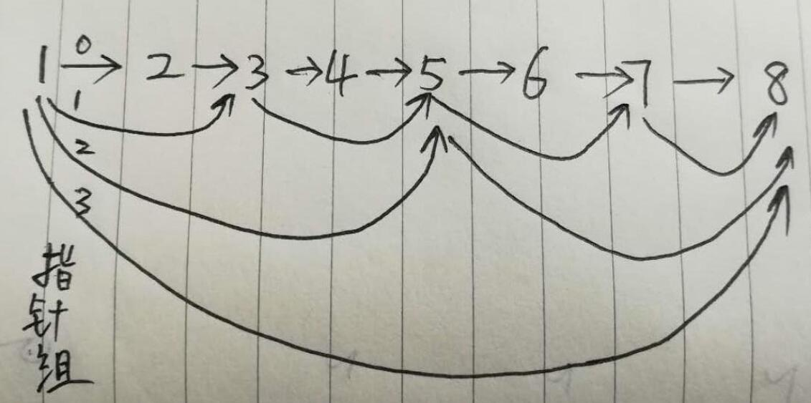

链表
结构体变量和结构体变量通过指针连接形成变量。 结构体包括数据域、指针域。
单链表基本操作
动态创建一个链表：动态内存申请+模块化设计。
定义节点数据结构
xtypedef struct student { char name[20]; int score;}Student; // 数据域结构体struct Node { Student data; struct Node* next; // 链表节点};创建链表
创建一个表头代表整个链表，链表头不包含有效的数据域（空头链表）。
xxxxxxxxxx// 创建一个空头链表struct Node* createList() { // 比较常用的是空头链表，链表头节点不存数据。 // 它永远固定在链表的首位，作为链表的头部，代表整个链表，方便之后的索引 struct Node* headNode = (struct Node*)malloc(sizeof(struct Node)); // headNode->data = // 可以不赋值，总之无效 headNode->next = NULL; return headNode;}创建链表节点
xxxxxxxxxx// 创建一个节点struct Node* createNode(Student data) { struct Node* newNode = (struct Node*)malloc(sizeof(struct Node)); newNode->data = data; newNode->next = NULL; return newNode;}插入节点
xxxxxxxxxx// 插入一个节点（头部插入）struct Node* insertByHead(struct Node* head, Student data) { struct Node* newNode = createNode(data); newNode->next = head->next; head->next = newNode; return head;}删除节点
xxxxxxxxxx// 删除一个节点（删除等于给定值的第一个节点）struct Node* deleteByPos(struct Node* head, int score) { // 定义两个指针，分别指向即将删除的节点以及前驱节点 struct Node* delposPre = head; struct Node* delpos = head->next; // 链表为空 if (delpos == NULL) { printf("list is null.\n"); return head; } // 位置查找 while (delpos->data.score != score) { delposPre = delpos; delpos = delpos->next; if (delpos == NULL) { printf("cannot find node for delete.\n"); return head; } } delposPre->next = delpos->next; free(delpos); return head;}遍历链表
xxxxxxxxxx// 遍历链表void printList(struct Node* head) { struct Node* pos = head->next; printf("name\tage\n"); while (pos != NULL) { printf("%s\t%d\n", pos->data.name, pos->data.score); pos = pos->next; } printf("\n");}测试程序
xxxxxxxxxxint main() { printf("input information for a student => name score\n"); struct Node* list = createList(); while (1) { Student st; setbuf(stdin, NULL); // 清空标准输入的缓存 scanf("%s %d", st.name, &st.score); insertByHead(list, st); printf("continue? (Y/N)\n"); setbuf(stdin, NULL); int choice = getchar(); if (choice == 'N' || choice == 'n') { break; } } printList(list); deleteByPos(list, 100); // 删除第一个100分的记录 printList(list); system("pause"); return 0;}其他
C语言和C++结构体的差异：
C++中的结构体和类一样，可以有函数(自定义函数，构造函数、析构函数、this指针)、可以自定义访问权限(public/protected/private)、可以继承。
用法上的区别：
在C语言中，使用typedef定义别名, 或者定义时带上struct，显示指明是结构体。
xxxxxxxxxx1. typedef struct Complex{int real;int imag;}COMPLEX;定义 => COMPLEX com = {2, 3}; // COMPLEX 是 struct Complex 的别名, 定义时赋值可以用{}struct Complex{int real;int imag;};定义 => struct Complex com = {2, 3}; // 这里必须带structC++中和类(class)的用法一样，比较简单。
xxxxxxxxxxstruct Complex{int real;int imag;};定义 => Complex com = {2, 3}; // 可以不带struct
扩展：LRU缓存淘汰算法
基本思路：最近最不常用的key从缓存中清除。
实现思路（利用双向链表实现，插入删除的时间复杂度是O(1)）：
如果此数据已经在链表中了，通过遍历得到这个数据节点，并将其从原来的位置删除，然后再插入到链表头部。
如果此数据不在缓存链表中，可以分两种情况。
a. 如果此时缓存未满，则将此节点直接插入到链表的头部；
b. 如果此时缓存已满，则链表尾部节点删除，将新的数据插入到链表头部；
优化：
这时，虽然插入删除的时间复杂度是o(1),但是查找节点的时间复杂度是o(n)，可以采用哈希表记录每个数据的位置，将访问的时间复杂度降低到o(1)。
小结：
- 链表：插入删除的时间复杂度是o(1)，查找的时间复杂度是o(n)。（优化访问效率->跳表）
- 数组：根据下标随机访问的时间复杂度是o(1)。插入删除需要移动大量元素。
- 哈希：根据key值随机访问的时间复杂度是o(1)。（存在hash冲突的情况下是线性复杂度）。
代码实现
using namespace std;/*** Definition of cachelist node, it's double linked list node.*/struct CacheNode{int key;int value;CacheNode *pre, *next;CacheNode(int k, int v) : key(k), value(v), pre(NULL), next(NULL) {}};class LRUCache{private:int size; // Maximum of cachelist size.CacheNode *head, *tail;map<int, CacheNode *> mp; // Use hashmap to storepublic:LRUCache(int capacity){size = capacity;head = NULL;tail = NULL;}int get(int key){map<int, CacheNode *>::iterator it = mp.find(key);if (it != mp.end()) {CacheNode *node = it->second;remove(node);setHead(node);return node->value;} else {return -1;}}void set(int key, int value){map<int, CacheNode *>::iterator it = mp.find(key);if (it != mp.end()) {CacheNode *node = it->second;node->value = value;remove(node);setHead(node);} else {CacheNode *newNode = new CacheNode(key, value);if (mp.size() >= size) {map<int, CacheNode *>::iterator iter = mp.find(tail->key);remove(tail);mp.erase(iter);}setHead(newNode);mp[key] = newNode;}}void remove(CacheNode *node){if (node->pre != NULL) {node->pre->next = node->next;} else {head = node->next;}if (node->next != NULL) {node->next->pre = node->pre;} else {tail = node->pre;}}void setHead(CacheNode *node){node->next = head;node->pre = NULL;if (head != NULL) {head->pre = node;}head = node;if (tail == NULL) {tail = head;}}};int main(int argc, char **argv){LRUCache *lruCache = new LRUCache(2);lruCache->set(2, 1);lruCache->set(1, 1);cout << lruCache->get(2) << endl;lruCache->set(4, 1);cout << lruCache->get(1) << endl;cout << lruCache->get(2) << endl;}
扩展：跳表
参考： https://www.jianshu.com/p/84faf961ae80
数据结构
跳表可以把单向链表查找的时间复杂o(N)度降低到o(logN)。分析：假如链表中有 n 个元素，我们每两个节点建立一个索引，那么第 1 级索引的结点个数就是 n/2 ，第二级就是 n/4，第三级就是 n/8, 依次类推，也就是说第 k 级索引的结点个数为 n/(2^k)。这个遍历查找和树结构很类似，每层m （常数）个结点，所以时间复杂度为o(logN)。（和二叉查找树、有序数组的二分查找时间复杂度相同）。

数据结构
数据域 + 指针数组。

附 c++链表刷题代码
xxxxxxxxxxusing namespace std;// 链表节点struct ListNode { int val; ListNode *next; ListNode(int x) : val(x), next(NULL) {}};// 打印链表void printList(ListNode* head) { ListNode *tmp= head; while(tmp) { cout << tmp->val << " "; tmp = tmp->next; } cout << endl;}// 创建链表ListNode* createList(vector<int>& data) { auto it = data.begin(); ListNode* head = new ListNode(*it); ListNode* new_head = head; it++; for(; it != data.end(); it++) { ListNode* new_node = new ListNode(*it); head->next = new_node; head = head->next; } return new_head;}/* leetcode-206 单链表反转 示例:输入: 1->2->3->4->5->NULL输出: 5->4->3->2->1->NULL思路：非递归方式实现。*/class Solution206 {public: ListNode* reverseList(ListNode* head) { if (head == NULL || head->next == NULL) { return head; } // 定义两个指针依次反转 // new_head：翻转后新的头节点 // cur：当前待反转的节点 ListNode* new_head = head; ListNode* cur = head->next; new_head->next = NULL; while(cur) { ListNode* tmp = cur->next; // 保存下一个待反转的节点 cur->next = new_head; new_head = cur; cur = tmp; } return new_head; }};/*leetcode-92反转从位置 m 到 n 的链表。请使用一趟扫描完成反转。说明:1 ≤ m ≤ n ≤ 链表长度。示例:输入: 1->2->3->4->5->NULL, m = 2, n = 4输出: 1->4->3->2->5->NULL*/class Solution92 {public: ListNode* reverseBetween(ListNode* head, int m, int n) { if (head == NULL || head->next == NULL || m == n) { return head; } // 一遍扫描记录四个关键节点 1 ≤ m ≤ n ≤ 链表长度 // m可能是首节点，fixed_begin == NULL，反转后的头节点即为新的头节点。 // n可能是尾节点，fixed_end == NULL，这种情况不需要特殊处理。 ListNode *fixed_begin = NULL; ListNode *fixed_end = NULL; ListNode *new_head = NULL; ListNode *new_end = NULL; ListNode* tmp = head; // 先找到fixed_begin 和 new_end。 // new_head = fixed_begin->next // fixed_end = new_end->next for(int i = 1; i <=n; i++) { if (i == m-1) { // m==1时，fixed_begin==NULL fixed_begin = tmp; } if (i == m) { new_head = tmp; } if (i == n) { new_end = tmp; } tmp = tmp->next; } if (new_end != NULL) { fixed_end = new_end->next; // fixed_end可能为NULL } // 反转 ListNode* cur = new_head->next; new_head->next = fixed_end; // 连接 尾端 while(cur != fixed_end && cur != NULL) { ListNode *tmp = cur->next; cur->next = new_head; new_head = cur; cur = tmp; } if (fixed_begin) { fixed_begin->next = new_head; // 连接 头端 } else { head = new_head; } return head; }};/*leetcode-160编写一个程序，找到两个单链表相交的起始节点。解题思路1：定义一个set，把listA所有节点地址放入；然后依次遍历listB的每一个节点，如果在set中，则返回交点。解题思路2：(1) 计算listA的长度和listB的长度，较长链表多出来的长度为n；(2) 较长链表先向后移动n个位置（对齐）。(3) 然后同时移动listA和listB，当两个指针相同时，即为交点。*/class Solution160 {public: ListNode *getIntersectionNode1(ListNode *headA, ListNode *headB) { set<ListNode *> setA; ListNode* intersectionNode = NULL; ListNode* tmp = headA; while (tmp != nullptr) { setA.insert(tmp); tmp = tmp->next; } tmp = headB; while (tmp != nullptr) { if (setA.find(tmp) != setA.end()) { intersectionNode = tmp; break; } tmp = tmp->next; } return intersectionNode; } ListNode *getIntersectionNode2(ListNode *headA, ListNode *headB) { ListNode* intersectionNode = nullptr; if (headA == nullptr || headB == nullptr) { return nullptr; } ListNode* tmp = headA; int lenA=0, lenB=0; while (tmp->next != nullptr) { lenA++; tmp = tmp->next; } tmp = headB; while (tmp->next != nullptr) { lenB++; tmp = tmp->next; } if (lenA > lenB) { tmp = headA; while(lenA > lenB) { tmp = tmp->next; lenA--; } headA = tmp; } if (lenB > lenA) { tmp = headB; while(lenB > lenA) { tmp = tmp->next; lenB--; } headB = tmp; } ListNode *tmpA = headA, *tmpB = headB; while (tmpA != nullptr && tmpB != nullptr) { if (tmpA == tmpB) { intersectionNode = tmpA; break; } tmpA = tmpA->next; tmpB = tmpB->next; } return intersectionNode; }};/*leetcode-142环形链表给定一个链表，返回链表开始入环的第一个节点。 如果链表无环，则返回 null。思路1：遍历同时把几点地址存入set，当再次在set中找到这个节点时说明有环。思路2：快慢指针赛跑：快指针每次走2步，慢指针每次走1步，快慢指针会在环内某一点处相遇。快指针走的步数是慢指针走的两倍，即 2* (x + y) = x + y + z + y => x = z结论：慢指针从开始走，快指针从相遇点开始走，相遇的点即为交点。*/class Solution142 {public: ListNode *detectCycle1(ListNode *head) { ListNode* crossNode = nullptr; set<ListNode*> mset; ListNode* tmp = head; while (tmp != nullptr) { if (mset.find(tmp) != mset.end()) { crossNode = tmp; break; } mset.insert(tmp); tmp = tmp->next; } return crossNode; } ListNode *detectCycle2(ListNode *head) { ListNode* crossNode = nullptr; ListNode* fastNode = head; ListNode* slowNode = head; ListNode* meetNode = nullptr; bool flag = false; while(fastNode && fastNode->next) { slowNode = slowNode->next; fastNode = fastNode->next; if (fastNode->next == nullptr) { break; } fastNode = fastNode->next; if (fastNode == slowNode) { meetNode = slowNode; // 相遇点 break; } } if (meetNode) { slowNode = head; fastNode = meetNode; while (slowNode != fastNode) { slowNode = slowNode->next; fastNode = fastNode->next; } crossNode = slowNode; } return crossNode; }};/*leetcode-86分隔链表：给定一个链表和一个特定值 x，对链表进行分隔，使得所有小于 x 的节点都在大于或等于 x 的节点之前。你应当保留两个分区中每个节点的初始相对位置。示例:输入: head = 1->4->3->2->5->2, x = 3输出: 1->2->2->4->3->5思路：巧用链表临时头节点（创建空头链表），串联需要的元素。*/class Solution86 {public: ListNode* partition(ListNode* head, int x) { if (head == nullptr || head->next == nullptr) { return head; } ListNode* littleNode = new ListNode(0); // 临时节点，串联小于x的元素 ListNode* bigNode = new ListNode(0); // 临时节点，串联大于等于x的元素 ListNode* littleHead = littleNode; ListNode* bigHead = bigNode; ListNode* tmp = head; while(tmp) { if (tmp->val < x) { littleNode->next = tmp; littleNode = littleNode->next; } else { bigNode->next = tmp; bigNode = bigNode->next; } tmp = tmp->next; } littleNode->next = bigHead->next; if (bigNode) { bigNode->next = nullptr; } return littleHead->next; }};/*leetcode-138复杂链表的深拷贝。给定一个链表，每个节点包含一个额外增加的随机指针，该指针可以指向链表中的任何节点或空节点。要求返回这个链表的深拷贝。 */class Node {public: int val; Node* next; Node* random; Node(int _val) { val = _val; next = NULL; random = NULL; }};/*3-->5-->7-->10->NULL3------>7 5------>10 7->7*/Node* creatRandomList() { Node* head = new Node(3); Node* tmp = head; Node* node1 = new Node(5); Node* node2 = new Node(7); Node* node3 = new Node(10); head->next = node1; // 3 head->random = node2; node1->next = node2; // 5 node1->random = node3; node2->next = node3; // 7 node2->random = node2; return head;}void printRandomNode(Node* head) { Node* tmp = head; while(tmp) { int next = -1; int random = -1; if (tmp->next != nullptr) { next = tmp->next->val; } if (tmp->random != nullptr) { random = tmp->random->val; } cout << tmp->val << "-> ( " << next << ", " << random << " )" << endl; tmp = tmp->next; }}class Solution138 {public: Node* copyRandomList(Node* head) { if (head == nullptr) { return nullptr; } Node* tmp = head; vector<Node *> nodes; // index -- node vector<Node *> random_index; // index -- node的random指针指向的node地址 map<Node*, int> random_reverse_index; // node的random指针指向的node地址 -- index int index = 0; // 收集链表节点、random指针信息 while(tmp) { nodes.push_back(new Node(tmp->val)); random_reverse_index.insert(std::pair<Node*, int>(tmp, index)); random_index.push_back(tmp->random); index++; tmp = tmp->next; } // 连接指针（next、random） for(int i=0; i<nodes.size();i++) { // 连接next指针（最后一个node是NULL,不用处理） if ( i+1 < nodes.size()) { nodes[i]->next = nodes[i+1]; } // 连接random指针 assert(nodes.size() == random_index.size()); auto it = random_reverse_index.find(random_index[i]); if (it != random_reverse_index.end()) { nodes[i]->random = nodes[it->second]; } } return nodes[0]; }};/*leetcode-21合并两个有序链表将两个有序链表合并为一个新的有序链表并返回。新链表是通过拼接给定的两个链表的所有节点组成的。 */class Solution21 {public: ListNode* mergeTwoLists(ListNode* l1, ListNode* l2) { // 创建一个临时头节点（空头节点）,将符合条件的结果串起来 ListNode* head = new ListNode(0); ListNode* t1 = l1; ListNode* t2 = l2; ListNode* tmp = head; while(t1 && t2) { if (t1->val <= t2->val) { tmp->next = t1; t1 = t1->next; } else { tmp->next = t2; t2 = t2->next; } tmp = tmp->next; } while(t1) { tmp->next = t1; t1 = t1->next; tmp = tmp->next; } while(t2) { tmp->next = t2; t2 = t2->next; tmp = tmp->next; } return head->next; }};/*leetcode-23合并k个有序链表思路：将k个节点地址放到vector中，再将vector排序，再将节点顺序相连。*/class Solution23 {public: ListNode* mergeKLists(vector<ListNode*>& lists) { vector<ListNode* > listSet; for(auto it=lists.begin(); it!=lists.end();it++) { ListNode* tmp = *it; while(tmp) { listSet.push_back(tmp); tmp = tmp->next; } } if (listSet.size() == 0) { return nullptr; } // 自定义比较函数，排序，串联 std::sort(listSet.begin(), listSet.end(), sortList()); for(size_t i=0; i<listSet.size();i++) { if (i < listSet.size() - 1) { listSet[i]->next = listSet[i+1]; } else { listSet[i]->next = nullptr; } } return listSet[0]; }private: struct sortList{ bool operator() (ListNode* a, ListNode* b) { return a->val < b->val; } }; };int main() { vector<int> data = {1, 22, 7}; ListNode* head1 = createList(data); vector<int> data2 = {2, 35, 3}; ListNode* head2 = createList(data2); vector<ListNode*> v = {head1, head2}; Solution23 st23; ListNode* newhead = st23.mergeKLists(v); printList(newhead); system("pause");}